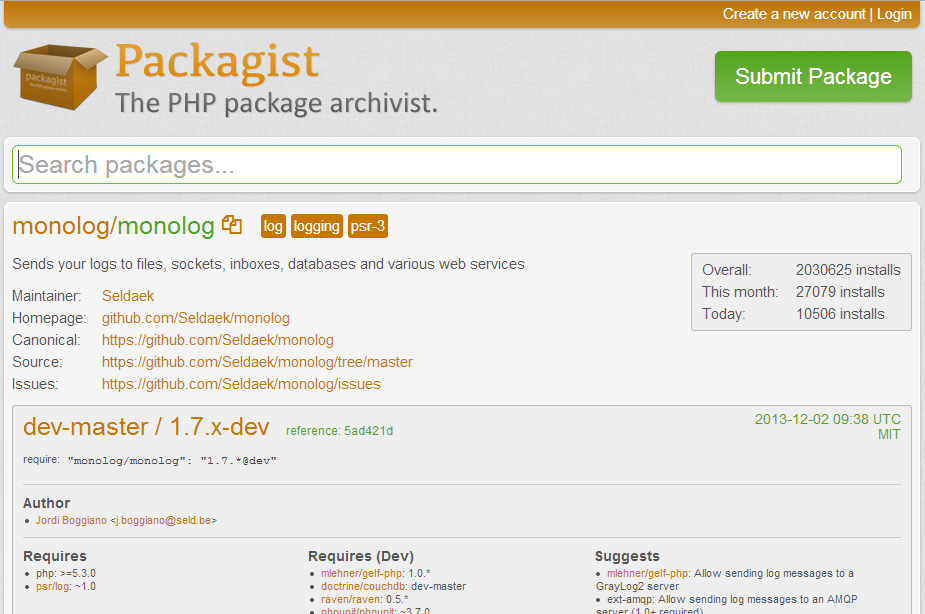

Created by Vincent Peters
Eerst instaleren, D'oh
Easy -> getcomposer.org
$ composer init
$ composer init
Welcome to the Composer config generator
This command will guide you through creating your composer.json config.
Package name (\< vendor>/< name>) [Vinnie/presentations]: vinnie/presentaties
Description []: Composer presentaties
Author [Captain Mustacho < vincent@cloudmonkeys.be>]:
Minimum Stability []: stable
License []: MIT
Define your dependencies.
Would you like to define your dependencies (require) interactively [yes]? n
Would you like to define your dev dependencies (require-dev) interactively [yes]? n
// Voorbeeld van composer.json
Do you confirm generation [yes]? y
Config bestand in JSON formaat
{
"name": "vinnie/presentaties",
"description": "Composer presentaties",
"license": "MIT",
"authors": [
{
"name": "Captain Mustacho",
"email": "vincent@cloudmonkeys.be"
}
],
"minimum-stability": "stable"
}
{
"require": {
"vendor/package": "version"
}
}
{
"require": {
"laravel/framework": "~4.0"
}
}
{
"require-dev": {
"vendor/package": "version"
}
}
{
"require-dev": {
"phpunit/phpunit": "3.7.*",
"codeception/codeception": "1.6.*@dev"
}
}
Package list te vinden op packagist.org
Hoe kunnen we specifieren welke versie van de package nodig is?
| Exact version | 1.0.2 |
| Wildcard | 1.0.* |
| Tilde Operator | ~1.2 |
| Range | >= 1.0 , < 1.1 | > = 1.2 |
{
"name": "Mychannls",
"description": "A new way of watching television",
"repositories": [
{
"type": "composer",
"url": "http://packages.cartalyst.com"
}
],
"require": {
"laravel/framework": "4.0.*",
"cartalyst/sentry": "2.0.*",
"predictionio/predictionio": "*",
"pda/pheanstalk": "dev-master",
"iron-io/iron_mq": "dev-master",
"cartalyst/sentry": "2.0.*",
"roumen/sitemap": "dev-master",
"cartalyst/sentry-social": "2.0.*",
"facebook/php-sdk": "3.2.*"
},
"require-dev": {
"mockery/mockery": "dev-master@dev",
"phpunit/phpunit": "3.7.*",
"codeception/codeception": "1.6.*@dev",
"raveren/kint": "dev-master"
},
"autoload": {
"classmap": [
"app/commands",
"app/controllers",
"app/controllers/api",
"app/controllers/web",
"app/models",
"app/libraries/recommendations",
"app/libraries/postman",
"app/libraries/tools",
"app/libraries/lifeInvader",
"app/libraries/videotools",
"app/database/migrations",
"app/database/seeds",
"app/tests/TestCase.php"
]
},
"scripts": {
"post-install-cmd": [
"php artisan optimize"
],
"pre-update-cmd": [
"php artisan clear-compiled"
],
"post-update-cmd": [
"php artisan optimize"
],
"post-create-project-cmd": [
"php artisan key:generate"
]
},
"config": {
"preferred-install": "dist"
},
"minimum-stability": "dev"
}
Composer.json gereed?
$ composer install
locked install package versies
Geen composer.lock? Installeer hoogste versies volgens package.json
Wel een composer.json! Installeer de versies volgens lock file
Installeer altijd de hoogste versie mogelijk volgens het config file
En maak nieuw composer.lock aan
$ composer update
Snel een laravel project opstarten?
composer create-project laravel/laravel --prefer-dist
$ composer create-project laravel/laravel --prefer-dist
Installing laravel/laravel (v4.0.9)
- Installing laravel/laravel (v4.0.9)
Downloading: 100%
Created project in C:\xampp\htdocs\presentations\composer\laravel
Loading composer repositories with package information
Installing dependencies (including require-dev)
// Instaleren van alle dependencies